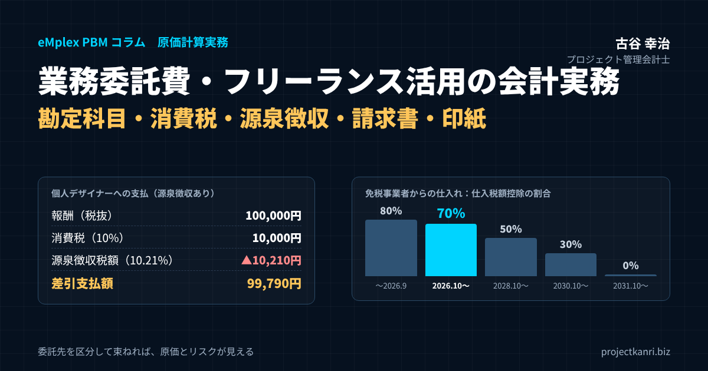

プロジェクト原価計算における業務委託費・フリーランス活用の会計実務

結論：業務委託費は「外注費と同じ」で済ませず、委託先の区分ごとに処理と原価を管理する
プロジェクト管理会計研究所の古谷です。最初に結論を申し上げます。業務委託費は、法人への外注も個人のフリーランスへの委託も、同じ「外注費」として一括りにしてしまうと、プロジェクト原価計算の精度と、税務・労務のコンプライアンスの両方が崩れます。委託先が法人か個人か、適格請求書発行事業者か免税事業者か、源泉徴収の対象となる報酬かどうか。この区分を発注の段階で決め、プロジェクトコードとともに記録しておくこと。それが業務委託費の会計実務の出発点です。
この記事の要点
- 勘定科目：業務委託費と外注費の使い分けに法令上の決まりはない。原価か販管費かはプロジェクトコードで決め、継続適用する
- 外注費との違い：本当に重要なのは「外注費と給与」の区分。代替性・指揮監督・危険負担・用具の提供など実態で判断
- 消費税：インボイスが必要。免税事業者からの仕入れは2026年10月〜2028年9月は70%控除（その後50%→30%→0%）
- 源泉徴収：個人へのデザイン料・原稿料・士業報酬などが対象。100万円以下10.21%、超える部分20.42%、翌月10日納付
- 請求書・印紙：インボイス6項目＋源泉内訳＋プロジェクトコード。請負は第2号文書、基本契約は第7号（4,000円）、電子契約は不要
システム開発、デザイン、映像制作、コンサルティング、建設。プロジェクト型ビジネスでは、繁閑の波に合わせて外部の人材の力を借りることが当たり前になりました。私がこれまで200社を超える企業の経営管理を支援してきたなかでも、売上原価に占める業務委託費・外注費の割合が3割を超える会社は珍しくありません。それだけ大きな原価項目でありながら、その会計処理は「請求書が来たら外注費で計上する」という運用にとどまっている会社が少なくないのが実情です。
ところが、2023年10月のインボイス制度の開始、2024年11月のフリーランス新法（特定受託事業者に係る取引の適正化等に関する法律）の施行、2026年1月の取適法（改正下請法）の施行、そして2026年10月からのインボイス経過措置の控除割合の変更と、業務委託費をめぐる制度はここ数年で大きく変わりました。同じ金額を支払っていても、相手が適格請求書発行事業者かどうかで、プロジェクトの実質的な原価負担が変わる。源泉徴収を漏らせば、会社が不納付加算税とともに納付することになる。契約書の作り方一つで、印紙税の額が変わる。業務委託費は、知らないうちに原価とリスクが動く費目になっているのです。
本稿では、業務委託費とは何かという定義から始め、外注費との違いと勘定科目の使い分け、仕訳、消費税とインボイスの経過措置、源泉徴収、請求書の記載事項、業務委託契約書の印紙、フリーランス新法と偽装請負への対応、そしてプロジェクト原価計算への組み込み方と月次決算・年末の実務までを、仕訳例と表を交えて解説します。最後に、よくいただく質問をFAQにまとめました。
なお、本稿は2026年10月時点の税法と制度の一般的な取扱いに基づいて解説しています。個別の取引の判断にあたっては、顧問税理士や専門家に必ずご確認ください。
業務委託費とは：定義と、プロジェクト原価計算での位置づけ
業務委託費とは、自社の業務の一部を、雇用関係のない外部の法人や個人に任せたときに支払う対価です。法律上、「業務委託契約」という名前の契約類型があるわけではなく、実際には、民法上の請負契約（仕事の完成に対して報酬を支払う契約）と、準委任契約（事務の処理という行為そのものに対して報酬を支払う契約）のどちらか、またはその組み合わせです。システム開発の一括請負は請負、エンジニアの月額稼働による支援は準委任、というのが典型的な例です。
プロジェクト原価計算の観点から見ると、業務委託費には二つの顔があります。一つは、特定のプロジェクトのために発生する「プロジェクト原価」としての業務委託費です。顧客から受注したシステムの一部の開発を協力会社に委託する、広告制作の撮影をフリーのカメラマンに依頼する、工事の一部を専門工事業者に任せる。これらは、そのプロジェクトの売上に直接対応する原価であり、プロジェクトコードを付けて集計し、売上原価（受注制作の途中であれば仕掛品）として扱います。
もう一つは、特定のプロジェクトに紐づかない「販売費及び一般管理費」としての業務委託費です。経理や給与計算の代行、社内システムの保守、清掃、採用代行などがこれに当たります。同じ「業務委託費」という名前でも、プロジェクト原価になるか、販管費になるかで、粗利と営業利益への影響の出方がまったく異なります。
この区分を決める実務上の鍵は、発注の時点でプロジェクトコードが付いているかどうかです。プロジェクトコードが付いた発注は原価、付いていない発注は販管費、というルールにしておけば、経理担当者が請求書を見て一件ずつ判断する必要がなくなります。プロジェクトコードの付番方法と設計については、本コラムの関連記事で詳しく解説していますので、あわせてご覧ください。
業務委託費の管理が難しいのは、契約の相手方が多様だからです。上場企業の協力会社もいれば、数名規模の制作会社もあり、個人事業主のフリーランスもいます。法人か個人か、課税事業者か免税事業者か、適格請求書発行事業者の登録をしているかどうか。この多様さが、消費税、源泉徴収、印紙税、フリーランス新法といった論点を生み、プロジェクトの原価にも影響を与えます。次の章から、論点ごとに整理していきます。
もう一つ押さえておきたいのが、業務委託費と、派遣料との違いです。労働者派遣契約に基づいて派遣会社に支払う派遣料は、派遣された人に自社が直接指揮命令できる点で、業務委託とは性質が異なります。派遣料も消費税の課税仕入れになり、プロジェクトに従事した派遣社員の費用はプロジェクト原価として集計しますが、原価計算上は工数に基づいて労務費に準じて配賦する会社も多くあります。業務委託、派遣、雇用のどれで人材を確保しているかを、原価データの上でも区別できるようにしておくと、後の分析がしやすくなります。
業務委託費と外注費の違い：勘定科目の使い分けと、給与との区分
よくいただく質問が、「業務委託費と外注費は何が違うのか」というものです。結論から言えば、会計上も税務上も、業務委託費と外注費の使い分けに法令上の決まりはありません。どちらも外部に業務を任せた対価であり、どの勘定科目名を使うかは会社の判断です。大切なのは、社内で定義を決め、継続して同じ基準で使うことです。
実務では、次のような使い分けがよく見られます。外注費は、自社が顧客から請け負った仕事の一部を外部に任せる場合、つまり製造、工事、制作、開発といった「本業の生産活動」に直接関わる委託に使う。業務委託費は、それ以外の、経理代行、システム保守、コールセンター、清掃といった「本業を支える業務」の委託に使う。この使い分けをすれば、外注費は原価、業務委託費は販管費という対応が分かりやすくなります。
| 項目 | 外注費 | 業務委託費 | 給与 |
|---|---|---|---|
| 主な内容 | 本業の生産活動（開発・制作・工事・製造）の委託 | 本業を支える業務（経理代行・保守・清掃等）の委託 | 雇用契約に基づく労働の対価 |
| 損益計算書の区分 | 売上原価（製造・工事原価） | 販売費及び一般管理費（プロジェクト原価なら外注費へ） | 原価（直接労務費）または販管費 |
| 消費税 | 課税仕入れ（インボイス要） | 課税仕入れ（インボイス要） | 不課税（仕入税額控除不可） |
| 源泉徴収 | 個人へのデザイン料等は必要 | 個人へのデザイン料・士業報酬等は必要 | 給与として源泉徴収・年末調整 |
| 社会保険 | 対象外 | 対象外 | 加入義務あり（要件による） |
※業務委託費と外注費の使い分けは会社ごとの定義によります。
ただし、プロジェクト型ビジネスで本当に注意すべきなのは、業務委託費と外注費の違いではなく、業務委託費（外注費）と「給与」との区分です。外部の個人に支払う対価が、税務上「給与」と判断されると、扱いが大きく変わります。給与であれば、源泉徴収は給与所得の源泉徴収税額表に従って行い、年末調整の対象にもなります。消費税の面では、給与は課税仕入れに当たらないため、仕入税額控除ができません。さらに、実態が雇用であれば、社会保険や労働保険への加入義務も問題になります。
給与か外注費かの判断について、国税庁は、契約の名称ではなく実態で判断するとしたうえで、主に次の点を総合的に勘案するとしています。その契約の内容が他人の代替を容れるかどうか（代替性）。仕事の遂行にあたり個々の作業について指揮監督を受けるかどうか。まだ引渡しを終わっていない完成品が不可抗力のため滅失した場合などに、報酬の請求をすることができるかどうか（危険負担）。材料や用具などを報酬の支払者から供与されているかどうか。代替性がなく、指揮監督を受け、危険負担がなく、用具も支給されている。こうした要素が多いほど、給与と判断されやすくなります。
たとえば、フリーランスのエンジニアと業務委託契約を結んでいても、毎日決まった時間に出社し、会社のパソコンを使い、社員と同じように上司から作業の指示を受け、成果物の完成ではなく勤務時間に応じて報酬を払っている。この実態であれば、税務調査で給与と認定されるリスクがあります。給与と認定されれば、過去に遡って源泉所得税の追加納付と、仕入税額控除の否認による消費税の追加納付が求められます。業務委託費の会計処理は、契約書の名前ではなく、働き方の実態から始まるのです。
建設業の一人親方との取引も、同じ論点を抱えています。一人親方への支払は、外注費として処理されるのが一般的ですが、実態として元請の指揮監督のもとで日々の作業をしている場合は、給与と判断されるリスクがあります。工事ごとに見積と請負契約を交わし、材料や工具を一人親方が自ら用意し、完成に責任を負う。こうした請負の実態を、契約書と日々の運用の両方で整えておくことが、外注費として処理するための前提になります。
業務委託費の勘定科目と仕訳：原価か販管費か、プロジェクトコードで決まる
業務委託費の勘定科目は、先ほどのとおり会社が定義して決めます。プロジェクト型ビジネスで私がお勧めしているのは、損益計算書の区分と、原価計算の費目の両方を意識した次のような設計です。プロジェクト原価になるものは「外注費」（原価計算上は経費または外注加工費）とし、製造原価報告書や工事原価報告書の外注費の行に集計する。販管費になるものは「業務委託費」または「支払手数料」とする。さらに、原価の外注費の中を、補助科目や取引先の属性で「法人外注」「個人委託」に分けておく。
建設業では、工事原価報告書に「外注費」の区分があり、建設業法上の財務諸表の様式でも外注費が独立した原価要素として表示されます。システム開発業でも、受注制作のソフトウェアの原価として外注費を集計し、未完成のものは仕掛品として資産に計上します。業務委託費・外注費を正しく原価に入れるかどうかは、粗利率だけでなく、仕掛品の残高と、収益認識の進捗度にも影響します。
仕訳の例を見ておきましょう。表は、税抜100万円の開発業務を法人の協力会社（適格請求書発行事業者）に委託した場合、税抜10万円のデザイン業務を個人のデザイナー（適格請求書発行事業者）に委託した場合、そして税込11万円の業務を免税事業者の個人に委託した場合の仕訳です。いずれも、プロジェクトコードを付けて原価として計上する前提です。
| 取引 | 借方 | 貸方 |
|---|---|---|
| ① 法人の協力会社（適格）に開発を委託 税抜1,000,000円＋消費税100,000円 | 外注費 1,000,000 仮払消費税 100,000 | 買掛金 1,100,000 |
| ② 個人デザイナー（適格）にデザインを委託 税抜100,000円＋消費税10,000円・源泉10.21% | 外注費 100,000 仮払消費税 10,000 | 預り金（源泉所得税）10,210 未払金 99,790 |
| ③ 免税事業者の個人に委託（2026年10月以後） 総額110,000円・経過措置70% | 外注費 103,000 仮払消費税 7,000 | 未払金 110,000 |
| ④ 翌月10日に源泉所得税を納付 | 預り金（源泉所得税）10,210 | 普通預金 10,210 |
※③の仮払消費税は 110,000×10/110×70%＝7,000円。いずれも発注時のプロジェクトコードを付して計上。
二つ目の仕訳のように、源泉徴収の対象となる報酬では、支払額から源泉所得税を差し引いて支払い、差し引いた額を「預り金」として計上します。この預り金は、原則として支払った月の翌月10日までに税務署に納付します。三つ目の免税事業者からの仕入れでは、2026年10月1日以後の取引について、消費税相当額の70％だけを仮払消費税として控除し、残りの30％は外注費に含めます。この30％分が、適格請求書発行事業者に委託した場合と比べた、実質的な原価の増加分です。
計上のタイミングにも注意が必要です。業務委託費は、請求書が届いた時点ではなく、役務の提供を受けた時点、つまり成果物の検収をした時点、または準委任であれば作業が行われた期間に対応して計上するのが原則です。月末に作業が完了しているのに請求書が翌月に届く場合は、月末に未払計上します。これを怠ると、プロジェクトの原価が月をまたいでずれ、月次のプロジェクト別損益と進捗度が狂います。
前払や着手金の扱いも決めておきましょう。制作の着手時に報酬の一部を前払する場合、支払った時点では前払金（または前渡金）として資産に計上し、役務の提供を受けた時点で外注費に振り替えます。前払の時点で外注費にしてしまうと、プロジェクトの原価が作業の進み方より先に計上され、進捗度や月次の損益がゆがみます。前払金にもプロジェクトコードを付けておけば、振替の漏れを防ぎやすくなります。
業務委託費の消費税：インボイス制度と2026年10月からの経過措置70%
業務委託費の消費税は、原則として課税仕入れに当たります。国内で行われる役務の提供の対価ですから、相手が法人でも個人でも、支払った消費税相当額を仕入税額控除の対象にできるのが基本です。ただし、2023年10月にインボイス制度が始まってからは、仕入税額控除を受けるために、原則として適格請求書発行事業者が発行する適格請求書（インボイス）の保存が必要になりました。
問題になるのが、適格請求書発行事業者の登録をしていない免税事業者のフリーランスなどに業務を委託した場合です。この場合、インボイスの交付を受けられないため、本来は仕入税額控除ができません。ただし、制度の急激な変化を和らげるための経過措置があり、一定の割合を控除することが認められています。この控除割合が、2026年10月1日から変わりました。
| 期間 | 仕入税額控除できる割合 |
|---|---|
| 2023年10月1日〜2026年9月30日 | 80% |
| 2026年10月1日〜2028年9月30日 | 70% |
| 2028年10月1日〜2030年9月30日 | 50% |
| 2030年10月1日〜2031年9月30日 | 30% |
| 2031年10月1日以後 | 控除不可 |
※帳簿への経過措置適用の旨の記載と、区分記載請求書等と同様の記載事項を備えた請求書等の保存が要件。
当初の制度では、2026年10月から控除割合が50％に下がる予定でしたが、令和8年度税制改正により、2026年10月から2028年9月までは70％、その後2030年9月までは50％、2031年9月までは30％と、より緩やかに縮小する形に見直されました。2031年10月以降は、免税事業者からの仕入れについて仕入税額控除はできなくなります。なお、経過措置の適用を受けるには、帳簿に経過措置の適用を受ける課税仕入れである旨（「80％控除対象」「70％控除対象」など）を記載し、区分記載請求書等と同様の記載事項を備えた請求書等を保存する必要があります。
プロジェクト原価計算への影響を、具体的な数字で確認しておきましょう。あるシステム開発のプロジェクトで、免税事業者のフリーランスエンジニアに、月額税込55万円で6か月間業務を委託したとします。消費税相当額は月5万円です。適格請求書発行事業者に委託した場合、5万円全額を控除できるため、原価は税抜の50万円です。免税事業者に委託した場合、2026年10月以後の取引では控除できるのは70％の3万5千円で、残りの1万5千円は原価に上乗せされます。原価は月51万5千円、6か月で9万円の原価増です。2028年10月以後に控除割合が50％になれば、原価増は月2万5千円、2031年10月以後は月5万円に広がります。
この差は、一件だけ見れば小さく見えるかもしれません。しかし、フリーランスへの委託が原価の大きな割合を占める会社では、全社の粗利率を数ポイント押し下げる要因になります。しかも、経過措置の段階的な縮小によって、同じ委託先に同じ金額を払い続けていても、原価は年々増えていきます。プロジェクトの見積や予算を作る段階で、委託先の登録状況と経過措置の控除割合を前提に織り込んでおくことが大切です。
売手であるフリーランスの側にも、制度の変化があります。免税事業者から適格請求書発行事業者になった個人事業者などが、売上に係る消費税額の2割を納付税額とすることができた「2割特例」は、令和8年度税制改正で見直され、個人事業者については納付税額を売上税額の3割とする「3割特例」として、一定期間延長されることになりました。委託先のフリーランスが登録を検討する際の判断材料にもなりますから、取引先との対話の中で、こうした制度の情報を共有することも、良好な関係づくりに役立ちます。
なお、免税事業者である委託先に対して、インボイス制度を理由に一方的に取引価格を引き下げたり、登録を強要したりすることは、独占禁止法や取適法、フリーランス新法上の問題になり得ます。価格の見直しを行う場合は、取引先と十分に協議し、双方が納得できる形で合意することが必要です。
経過措置の控除割合は、取引の時期、つまり課税仕入れを行った日で判定します。2026年9月に作業が完了して検収した業務は80％、10月に検収した業務は70％です。月をまたぐ準委任の業務委託で、月末締めの請求書を翌月に受け取るような場合は、どの月の課税仕入れかを、作業期間と検収の日に基づいて正しく判定してください。会計システムの税区分の設定も、2026年10月1日を境に切り替わっているか、あらためて確認しておきましょう。
業務委託費の源泉徴収：対象になる報酬・税率・計算例
業務委託費で最も見落とされやすいのが、源泉徴収です。法人に支払う業務委託費は、一部の例外を除いて源泉徴収の対象になりません。しかし、個人に支払う報酬・料金のうち、所得税法で定められたものについては、支払う側が所得税と復興特別所得税を源泉徴収し、国に納付する義務があります。源泉徴収を漏らした場合、本来徴収すべきだった税額を、会社が自ら納付しなければならず、不納付加算税や延滞税がかかることもあります。
源泉徴収の対象となる主な報酬・料金は、原稿料や講演料、デザイン料、翻訳料、通訳料、写真の撮影料といった、いわゆる「原稿料・デザイン料等」、弁護士、公認会計士、税理士、社会保険労務士、司法書士などの士業への報酬、そしてモデルや芸能の出演料、外交員の報酬などです。一方で、システムの開発やプログラミング、データ入力、一般的な事務作業の委託などは、原則として源泉徴収の対象になりません。
| 区分 | 主な例 |
|---|---|
| 源泉徴収の対象 | 原稿料、講演料、デザイン料（Web・広告・パッケージ・イラスト等）、翻訳料、通訳料、写真の撮影料、士業（弁護士・税理士・社労士・司法書士等）への報酬、モデル・出演料 |
| 原則として対象外 | システム開発・プログラミング、コーディング、データ入力、一般的な事務作業、清掃、運送、建設工事（一人親方の工事代金） |
| 税率 | 1回の支払が100万円以下の部分10.21%、100万円超の部分20.42%（復興特別所得税を含む） |
| 納付期限 | 支払月の翌月10日（デザイン料・原稿料等には納期の特例の適用なし） |
※個別の判断は国税庁の資料・税理士にご確認ください。
プロジェクト型ビジネスで特に注意が必要なのが、デザイン料の範囲です。Webサイトのデザイン、広告のデザイン、商品のパッケージデザイン、イラストの制作などは、デザイン料として源泉徴収の対象となるのが一般的です。一方、同じWebサイトの制作でも、プログラミングやコーディングの部分は原則として対象外です。デザインとコーディングを一括して依頼し、請求書で金額が区分されていない場合は、全体を源泉徴収の対象とする判断が必要になることもあります。契約と請求書の段階で、業務の内容と金額を区分しておくことが、実務上のトラブルを防ぎます。
税率は、同じ人に1回に支払う金額が100万円以下の部分は10.21％、100万円を超える部分は20.42％です（所得税と復興特別所得税の合計）。たとえば、税抜50万円のデザイン料であれば、源泉徴収税額は5万1,050円です。税抜150万円であれば、100万円までの部分が10万2,100円、超える50万円の部分が10万2,100円で、合計20万4,200円になります。
消費税の扱いについては、原則として消費税等を含めた金額が源泉徴収の対象になりますが、請求書等で報酬・料金の額と消費税等の額が明確に区分されている場合は、報酬・料金の額のみを対象としてかまいません。実務上は、請求書で税抜金額と消費税額を区分してもらい、税抜金額に対して源泉徴収するのが一般的です。
源泉徴収した税額は、原則として支払った月の翌月10日までに納付します。給与などについて認められている「納期の特例」（半年分をまとめて納付する制度）は、士業への報酬には適用されますが、デザイン料や原稿料などには適用されません。デザイン料を毎月支払っている会社は、毎月の納付が必要です。経理の月次の手順の中に、源泉徴収の対象となる支払の抽出と、翌月10日の納付を組み込んでおきましょう。
年末には、「報酬、料金、契約金及び賞金の支払調書」を作成し、翌年1月31日までに税務署に提出します。提出が必要となるのは、デザイン料や原稿料などは同じ人に対する年間の支払が50万円を超える場合、士業への報酬は5万円を超える場合などです。支払調書の作成のためにも、源泉徴収の対象となる支払を、委託先ごとに年間で集計できるようにしておく必要があります。
源泉徴収が必要かどうかの判断に迷う場合は、契約の内容を具体的に確認することが第一です。同じ「制作」でも、デザイン性のある成果物を作るのか、仕様に従って機能を実装するのかで扱いが異なります。判断の結果と根拠は、委託先マスタや契約の管理台帳に記録しておき、担当者が替わっても同じ判断ができるようにしておきます。判断に迷うものは、税務署や顧問税理士に事前に確認しておくと安心です。
業務委託費の請求書：インボイス記載事項と源泉徴収の書き方
業務委託費の請求書は、仕入税額控除の要件、源泉徴収の計算、そしてプロジェクト原価の集計という三つの役割を持つ書類です。受け取る側として、請求書に何が書かれているべきかを確認しておきましょう。
まず、仕入税額控除のためには、適格請求書（インボイス）の記載事項を満たしている必要があります。適格請求書発行事業者の氏名または名称と登録番号、取引年月日、取引内容、税率ごとに区分して合計した対価の額と適用税率、税率ごとに区分した消費税額等、そして書類の交付を受ける事業者の氏名または名称の6項目です。登録番号が記載されていても、その番号が実際に有効かどうかは、国税庁の適格請求書発行事業者公表サイトで確認できます。新しい委託先と取引を始めるときには、登録の有無と番号を確認し、取引先マスタに記録しておくことをお勧めします。
次に、源泉徴収の対象となる報酬の場合は、報酬額（税抜）、消費税額、源泉徴収税額、差引の請求額を明記してもらうのが望ましい形です。消費税額が区分されていれば、税抜の報酬額だけを源泉徴収の対象にできますし、支払う側と受け取る側で金額の認識がずれることも防げます。
| 区分 | 確認項目 |
|---|---|
| インボイス（適格請求書） | ①発行事業者の氏名・名称と登録番号 ②取引年月日 ③取引内容 ④税率ごとの対価の額と適用税率 ⑤税率ごとの消費税額等 ⑥受領者の氏名・名称 |
| 源泉徴収の対象報酬 | 報酬額（税抜）、消費税額、源泉徴収税額、差引請求額の明記 |
| 免税事業者の請求書 | 区分記載請求書等と同様の記載事項（経過措置の適用のため） |
| 原価集計のため | 発注番号・プロジェクトコード、作業期間または検収日 |
プロジェクト型ビジネスでもう一つ大切なのが、請求書へのプロジェクトコードや発注番号の記載です。協力会社やフリーランスに、請求書に発注番号を記載してもらうよう依頼しておけば、経理担当者は請求書を見てすぐに、どのプロジェクトの原価かを判断できます。発注番号とプロジェクトコードが紐づいていれば、請求書の計上がそのままプロジェクト別の原価集計につながります。
免税事業者のフリーランスから受け取る請求書には、登録番号がありません。この場合は、先ほどの経過措置の適用を受けるため、請求書に区分記載請求書等と同様の記載事項（発行者の氏名、取引年月日、取引内容、対価の額、受領者の氏名など）が備わっていることを確認し、帳簿に「70％控除対象」などの記載を行います。会計システムで、委託先マスタの登録状況から自動で税区分が選ばれるようにしておけば、入力の誤りを防げます。
請求書の受領と処理の期限も、フリーランス新法との関係で重要になります。後の章で述べるとおり、フリーランスへの報酬は、給付を受領した日から60日以内のできる限り短い期間内に支払期日を定めて支払う必要があります。請求書の到着が遅れたことを理由に支払を遅らせることはできませんから、検収の日と支払期日を管理する仕組みが欠かせません。
請求書の受領は、電子で行う会社が増えています。電子で受け取った請求書は、電子帳簿保存法の電子取引のデータ保存の要件に従って、電子データのまま保存する必要があります。紙に印刷して保存するだけでは要件を満たしません。フリーランスからメールで請求書を受け取る運用が多い会社では、受領した請求書を所定の場所に保存し、取引年月日、取引金額、取引先で検索できる状態にしておく仕組みを整えておきましょう。
業務委託費の印紙：業務委託契約書に印紙が必要な場合と金額
業務委託契約書に収入印紙が必要かどうかは、契約書の名前ではなく、記載されている内容で決まります。印紙税法上、業務委託契約書が該当しうるのは、主に「請負に関する契約書」（第2号文書）と「継続的取引の基本となる契約書」（第7号文書）です。準委任契約、つまり仕事の完成ではなく事務の処理を目的とする契約は、原則としてどちらにも当たらず、印紙は不要です。
第2号文書に当たるのは、仕事の完成を約し、その結果に対して報酬を支払う請負契約の契約書です。システムの開発、Webサイトの制作、デザインの制作、映像の制作、建設工事など、成果物の完成を目的とする業務委託契約は、請負契約として第2号文書に該当します。税額は契約金額によって決まり、1万円未満は非課税、100万円以下は200円、100万円超200万円以下は400円、200万円超300万円以下は1,000円、300万円超500万円以下は2,000円、500万円超1,000万円以下は1万円、1,000万円超5,000万円以下は2万円と、金額が大きくなるほど高くなります。契約金額の記載がない場合は200円です。
| 文書の種類 | 該当する契約 | 印紙税額 |
|---|---|---|
| 第2号文書（請負に関する契約書） | システム開発・制作・デザイン・工事など成果物の完成を目的とする契約 | 1万円未満 非課税／100万円以下 200円／200万円以下 400円／300万円以下 1,000円／500万円以下 2,000円／1,000万円以下 1万円／5,000万円以下 2万円（以下略）。金額記載なし200円 |
| 第7号文書（継続的取引の基本となる契約書） | 営業者間で継続する複数取引の共通条件（目的物の種類・単価・支払方法等）を定める基本契約 | 4,000円（契約期間3か月以内で更新の定めのないものを除く） |
| 不課税 | 準委任契約（事務処理の委託）で上記に該当しないもの | 不要 |
| 電子契約 | 電磁的記録で締結した契約 | 不要 |
※消費税額を区分記載すれば第2号文書の記載金額は税抜額。建設工事の請負契約書は軽減措置あり（2027年3月31日まで）。
第7号文書に当たるのは、営業者の間で、継続的に生じる複数の取引について、目的物の種類、取扱数量、単価、対価の支払方法などの共通の条件を定める基本契約書です。たとえば、協力会社との間で、個別の発注に共通して適用される取引条件を定めた「業務委託基本契約書」がこれに当たることが多く、税額は1通4,000円です。ただし、契約期間が3か月以内で、かつ更新の定めのないものは除かれます。準委任の基本契約であっても、こうした要件を満たせば第7号文書となり、印紙が必要になります。
実務上のポイントがいくつかあります。第一に、契約書に消費税額が区分して記載されている場合、第2号文書の契約金額には消費税額を含めません。税込110万円の契約でも、「契約金額100万円、消費税額10万円」と区分して記載すれば、印紙税額は100万円以下の200円になります。「税込110万円」とだけ記載すると、110万円を基準に400円になります。第二に、建設工事の請負契約書については、印紙税の軽減措置が設けられています（2027年3月31日までに作成されるもの）。第三に、電子契約で締結した契約書は、紙の文書を作成していないため、印紙税の課税対象になりません。フリーランスとの小口の契約が多い会社では、電子契約に切り替えることで、印紙のコストと貼付・消印の手間を大きく減らせます。
注意したいのは、発注書と注文請書の関係です。発注者が交付する発注書（注文書）は、原則として契約の申込みの文書であり、印紙は不要です。しかし、受注者が発注者に交付する注文請書は、請負契約の成立を証明する文書として第2号文書に当たり、受注者側で印紙を貼る必要があります。また、発注書であっても、基本契約に基づき申込みがあれば自動的に契約が成立する旨が定められている場合などには、契約書として課税される場合があります。協力会社との取引の書式を設計する際には、こうした点も確認しておきましょう。
印紙税は、プロジェクトの原価に直接影響する金額としては小さいものです。しかし、貼り忘れが税務調査で指摘されると、本来の税額の3倍に相当する過怠税（自主的に申し出た場合は1.1倍）が課されます。業務委託の件数が多い会社では、契約の類型ごとに印紙の要否と金額を一覧にしておき、契約書の作成時にチェックする仕組みを持っておくことをお勧めします。
印紙税の負担は、契約書の作成者が負います。業務委託契約書を2通作成して双方が1通ずつ保有する場合、それぞれの1通が課税文書になり、それぞれが印紙を貼ります。どちらが負担するかを契約で定めることもできますが、一般的には各自が保有する分を負担します。コピーを保有するだけであれば、原則として課税されません。
フリーランス新法・取適法と偽装請負：発注側の義務と原価への影響
個人のフリーランスに業務を委託する際には、2024年11月1日に施行されたフリーランス新法（特定受託事業者に係る取引の適正化等に関する法律）への対応が欠かせません。この法律は、従業員を使用しない個人や一人社長の法人（特定受託事業者）に業務を委託する事業者に、取引の適正化と就業環境の整備のための義務を課しています。
取引の面で特に重要なのは、次の三点です。第一に、業務を委託したら、直ちに、給付の内容、報酬の額、支払期日などの取引条件を、書面または電子メールなどで明示しなければなりません。第二に、報酬の支払期日は、給付を受領した日から60日以内のできる限り短い期間内に定め、その日までに支払わなければなりません。第三に、一定期間以上継続する業務委託では、受領拒否、報酬の減額、返品、買いたたきなどの禁止行為が定められています。このほか、継続的な業務委託では、中途解除や更新しない場合の30日前までの予告、ハラスメント対策の体制整備、育児や介護との両立への配慮なども求められます。
また、2026年1月1日には、下請法が改正され、取適法（製造委託等に係る中小受託事業者に対する代金の支払の遅延等の防止に関する法律）として施行されました。手形による支払の禁止や、協議に応じない一方的な代金の決定の禁止などが新たに定められ、対象となる取引の範囲を判断する基準に従業員数の基準も加わりました。法人の協力会社への委託でも、自社と相手方の規模によっては取適法の対象となりますから、発注の書式や支払条件をあわせて見直しておく必要があります。
これらの法律への対応は、一見すると法務の論点ですが、プロジェクト原価計算にも直結します。支払期日の管理のためには、検収の日を正確に記録する必要があり、検収の日は原価の計上時期そのものです。取引条件の明示のためには、発注の時点で金額と内容を確定させる必要があり、これはプロジェクトの予算管理の前提です。法律への対応と原価管理の仕組みは、実は同じ方向を向いているのです。
もう一つ見過ごせないのが、偽装請負のリスクです。個人への業務委託が、実質的に発注元からの直接的な指揮命令のもとで行われている場合、労働者派遣法や職業安定法の観点から偽装請負とみなされるリスクがあります。先ほど述べた税務上の給与認定のリスクと重なる論点です。指揮命令の実態がある委託は、将来的に雇用契約への切り替えや、適法な派遣契約への見直しを求められる可能性があり、その場合には社会保険料などの新たなコストが発生します。原価計算の担当者がこのリスクの兆候にも目を配ることが、将来のコスト増を先読みする一助になります。
兆候を見つける手がかりは、データの中にあります。同じフリーランスに、何年も途切れずに、毎月ほぼ同じ金額を支払っている。そのフリーランスの稼働が、社員と同じ勤務時間帯に、社内のシステムへのログインとして記録されている。業務の指示が、契約で定めた成果物ではなく、日々のタスクの単位で出されている。こうした状態が見られる委託は、契約の形態と実態を見直す候補です。私は支援先で、年に一度、継続期間の長い個人委託先を一覧にして、契約の実態を確認するレビューをお勧めしています。
フリーランス新法の取引条件の明示は、発注書の書式で対応するのが現実的です。発注書に、給付の内容、報酬の額、支払期日、検収の方法と期日、委託者と受託者の名称、委託した日などを記載する欄を設け、メールや電子契約のシステムで交付する。この発注書にプロジェクトコードと委託先区分を記載しておけば、法律への対応と原価管理のための情報が、一枚の書類で同時にそろいます。
プロジェクト原価計算での実務：委託先区分・予定単価・未払計上・内製比較
ここまでの論点を、プロジェクト原価計算の仕組みにどう組み込むかを整理します。私が支援先で必ず整備していただくのは、次の四つです。
第一に、委託先マスタに「区分」を持たせることです。法人か個人か、適格請求書発行事業者か免税事業者か（登録番号）、源泉徴収の対象となる報酬の種類か、フリーランス新法の特定受託事業者に当たるか。この区分を委託先マスタに一度登録しておけば、発注や請求書の計上のたびに、税区分、源泉徴収の要否、支払期日のルールが自動的に決まります。区分がプロジェクトコードに紐づく原価データに引き継がれていれば、インボイス制度による実質的な原価負担の増減を、案件別の収支に正確に反映させることができます。特にフリーランス比率の高いIT開発や映像制作、コンサルティングといった業種では、この区分の有無が原価計算全体の精度を左右します。
| 区分項目 | 用途 |
|---|---|
| 法人／個人 | 源泉徴収の要否判定、フリーランス新法の対象判定 |
| 適格請求書発行事業者の登録番号（有無） | 消費税の税区分（全額控除か経過措置か）の自動判定 |
| 源泉徴収の対象となる報酬の種類 | 源泉徴収税額の自動計算、支払調書の集計 |
| 特定受託事業者（従業員を使用しない個人等）か | 取引条件の明示、60日以内の支払期日の管理 |
| 契約形態（請負／準委任）と基本契約の有無 | 原価の計上時期（検収／作業期間）、印紙の要否 |
第二に、予定単価の設計を、雇用社員とフリーランスで分けることです。雇用社員の労務費は、工数に予定賃率を掛けて計算するのが一般的ですが、同じ考え方は、準委任で稼働ベースの業務委託にも応用できます。ただし、フリーランスへの支払には社会保険料の会社負担分が含まれない一方、単価そのものが市場の相場に応じて変動しやすく、免税事業者であれば経過措置による原価の上乗せもあります。雇用社員向けの予定賃率とは別に、フリーランス向けの予定単価を職種やスキルレベル別に設計しておくことで、見積の精度が上がり、内製と業務委託のどちらが有利かを継続的に比較できる基盤が整います。
第三に、検収と未払計上のルールを統一することです。法人の外注では、検収の基準や支払サイトが契約書で明確に定められていることが多い一方、個人のフリーランスとの契約では、稼働ベースで月末にまとめて請求するといった簡易な形が取られがちです。この違いは、原価がプロジェクトに反映されるタイミングのずれにつながります。準委任の業務委託は作業が行われた月に、請負の業務委託は検収した月に、請求書の到着を待たずに原価を計上する。このルールを全社で統一し、月次決算の手順に未払計上の確認を組み込んでおく必要があります。
第四に、内製と業務委託の比較を、プロジェクトの単位で振り返ることです。同じ種類の業務を、社員で行ったプロジェクトと、フリーランスに委託したプロジェクトとで、時間当たりの原価、品質、納期を比べてみる。委託先ごとに、予定と実績の差、手戻りの発生状況を記録しておく。こうしたデータが蓄積されると、どの業務を内製し、どの業務を委託するのが有利かを、感覚ではなく数字で判断できるようになります。
システム開発、デザイン、映像制作といった業種では、繁閑の波に合わせて柔軟にリソースを調整できるフリーランスの活用が年々広がっています。私がこれまで支援してきた中でも、フリーランス比率が高い会社ほど、委託先区分を整備しているかどうかで、原価管理の精度に明確な差が出ていました。柔軟な働き方を取り入れることと、原価管理の精度を保つことは、決して二律背反ではありません。
こうした仕組みを整えると、経営会議での議論も変わります。「今期は外注費が増えた」という全社の数字ではなく、「このプロジェクトでは、免税事業者への委託による原価増が粗利率を1ポイント押し下げている」「デザイン業務は内製のほうが時間当たりの原価が2割低い」といった、具体的な打ち手につながる議論ができるようになります。業務委託費の管理は、コンプライアンスのためだけでなく、経営の判断の質を上げるための仕組みでもあるのです。
月次決算と年末の実務：業務委託費のチェックリスト
業務委託費の会計処理を毎月確実に回すために、月次決算と年末に確認すべき項目をチェックリストにまとめました。
| タイミング | 確認項目 |
|---|---|
| 発注時 | プロジェクトコード・委託先区分・取引条件の明示（金額・内容・支払期日） |
| 月末 | 作業済み・検収済みで請求書未着の委託費の未払計上 |
| 請求書の計上時 | 登録番号の確認と税区分、源泉徴収の対象判定と税額計算 |
| 翌月10日まで | 源泉所得税の納付（デザイン料・原稿料等は毎月） |
| 支払時 | フリーランスへの支払が受領から60日以内か |
| 年1回 | 継続期間の長い個人委託先の契約実態レビュー（給与認定・偽装請負リスク） |
| 翌年1月31日まで | 報酬、料金、契約金及び賞金の支払調書の提出 |
このチェックリストのうち、特に毎月の運用で差がつくのは、未払計上と源泉徴収の二つです。未払計上が漏れると、プロジェクトの原価が翌月にずれ込み、月次のプロジェクト別損益は実態よりも良く見えます。進行基準（進捗度に基づく収益認識）を採用している案件では、発生原価のずれがそのまま売上の計上額のずれになります。源泉徴収が漏れると、後から委託先に追加の徴収を依頼するか、会社が負担して納付することになり、取引先との関係にも影響します。
経理部門からは、「委託先ごとに区分を管理するのは手間が増えるだけではないか」という懸念が挙がることがあります。この懸念には、区分を一度マスタとして整備してしまえば、以降の入力は選択するだけで済み、むしろ月次決算での消費税の計算や源泉徴収の抽出、原価の実態把握が正確になるというメリットを丁寧に説明することが有効です。手間の増加は初期設定の段階に限られ、運用が始まれば負担は大きく変わらない。この実感を持ってもらうことが、定着の近道になります。
私がエンプレックス（現SCSK）でCFOを務めていた時代、システム開発の現場では、正社員だけでなく多くの外部エンジニアやフリーランスの力を借りてプロジェクトを進めていました。当時はまだインボイス制度もフリーランス新法もありませんでしたが、契約の形態によって原価の性質やリスクが異なることを踏まえた集計のルールを整えなければ、案件別の採算が正しく見えないという課題に直面していました。新卒で入社した朋友建設でも、工事の多くは協力会社の力で成り立っていました。外部の力を借りるほど、その費用を正しく束ねて見る仕組みが経営にとって欠かせなくなる。この経験は、現在の業務委託費の管理を考えるうえでも、変わらず通じる原点になっています。
業務委託費のよくある質問（FAQ）
Q. 業務委託費の勘定科目は何を使えばよいですか？
A. 法令上の決まりはなく、会社が定義して継続適用します。プロジェクト型ビジネスでは、プロジェクトの原価になる委託は「外注費」（原価）、本業を支える事務等の委託は「業務委託費」や「支払手数料」（販管費）とし、原価の外注費は法人外注・個人委託などの区分で補助管理するのがお勧めです。
Q. 業務委託費と外注費の違いは何ですか？
A. どちらも外部に業務を任せた対価で、使い分けに法令上の基準はありません。一般に外注費は本業の生産活動（製造・工事・制作・開発）の委託、業務委託費はそれ以外の業務の委託に使われます。より重要なのは、外注費と給与の区分で、代替性・指揮監督・危険負担・用具の提供などの実態で判断されます。
Q. 業務委託費に消費税はかかりますか？
A. 国内での役務提供の対価として、原則として課税仕入れになります。仕入税額控除には適格請求書（インボイス）の保存が必要で、免税事業者からの仕入れは経過措置により、2026年10月1日から2028年9月30日までは消費税相当額の70％、その後は50％、30％と段階的に控除割合が縮小します。
Q. 業務委託費は源泉徴収が必要ですか？
A. 個人に支払う報酬のうち、原稿料・デザイン料・翻訳料・講演料、士業への報酬など所得税法で定められたものは源泉徴収が必要です。税率は1回の支払が100万円以下の部分が10.21％、超える部分が20.42％です。システム開発やプログラミング、一般事務の委託は原則として対象外です。
Q. 源泉徴収は消費税込みの金額にかかりますか？
A. 原則は税込金額が対象ですが、請求書等で報酬額と消費税額が明確に区分されていれば、税抜の報酬額のみを対象にできます。実務上は区分記載された請求書を受け取り、税抜金額に対して源泉徴収するのが一般的です。
Q. 業務委託費の請求書に必要な記載事項は？
A. インボイスとしては、発行事業者の氏名・名称と登録番号、取引年月日、取引内容、税率ごとの対価の額と適用税率、税率ごとの消費税額等、受領者の氏名・名称の6項目です。源泉徴収対象なら報酬額・消費税額・源泉徴収税額・差引請求額、さらに発注番号やプロジェクトコードの記載をお勧めします。
Q. 業務委託契約書に印紙は必要ですか？
A. 請負契約（成果物の完成が目的）なら第2号文書として契約金額に応じた印紙（1万円未満は非課税、100万円以下200円など）が必要です。継続的取引の基本契約は第7号文書として4,000円。準委任契約は原則不要です。電子契約なら印紙税はかかりません。
Q. フリーランスへの支払期日に決まりはありますか？
A. フリーランス新法により、給付を受領した日から60日以内のできる限り短い期間内に支払期日を定め、その日までに支払う必要があります。あわせて、委託時に給付の内容・報酬額・支払期日などを書面や電子メール等で明示する義務があります。
まとめ：業務委託費を「区分して束ねる」ことが、原価とリスクを見える化する
業務委託費とフリーランスの活用は、プロジェクト型ビジネスにとって欠かせないリソース調達の手段です。一方で、インボイス制度、経過措置の段階的な縮小、源泉徴収、印紙税、フリーランス新法、取適法と、業務委託費をめぐる会計と法務の論点は、ここ数年で格段に増えました。
本稿のポイントを振り返ります。業務委託費と外注費の使い分けは会社が定義し、プロジェクトの原価になるかどうかはプロジェクトコードで決める。外注費と給与の区分は、契約の名前ではなく働き方の実態で判断する。消費税は、適格請求書発行事業者かどうかで原価が変わり、免税事業者からの仕入れは2026年10月から控除割合が70％になった。源泉徴収は、デザイン料や原稿料、士業への報酬などが対象で、翌月10日までに納付する。請求書では、インボイスの記載事項と源泉徴収の内訳、プロジェクトコードを確認する。業務委託契約書の印紙は、請負か準委任か、基本契約かで決まり、電子契約なら不要。そして、フリーランス新法と偽装請負への対応は、検収と支払期日、契約の実態の管理を通じて、原価管理の仕組みと一体で進める。
明日から着手できることとして、三つをお勧めします。一つ目は、直近1年間に支払った業務委託費を委託先ごとに集計し、法人か個人か、登録番号の有無、源泉徴収の要否を一覧にしてみることです。二つ目は、源泉徴収の対象となる報酬が漏れなく処理されているかを、デザインや原稿、士業への支払を中心に確認することです。三つ目は、フリーランスへの支払期日が、受領から60日以内になっているかを確認することです。この三つを押さえるだけでも、業務委託費の管理の水準は大きく上がります。
私たちが提供している「eMplex PBM」では、発注登録の段階で委託先が法人か個人か、そして適格請求書発行事業者かどうかを選択できるマスタ設計を採用しており、プロジェクト別の原価集計に自動的に反映される仕組みを備えています。予定単価についても、雇用社員向けとフリーランス向けを別々のテーブルで管理できるため、内製と業務委託のどちらが有利かを職種やスキルレベル別に継続的に比較することができます。制度対応の手間を抑えながら、精度の高い原価管理を実現したい企業に、選択肢の一つとしてご検討いただければと思います。
外部の力を借りることは、プロジェクト型ビジネスの成長の源泉です。だからこそ、その費用を区分して、正しく束ねて見る。業務委託費の会計実務を整えることは、原価の正確さと、取引先との健全な関係の両方を守ることにつながっています。